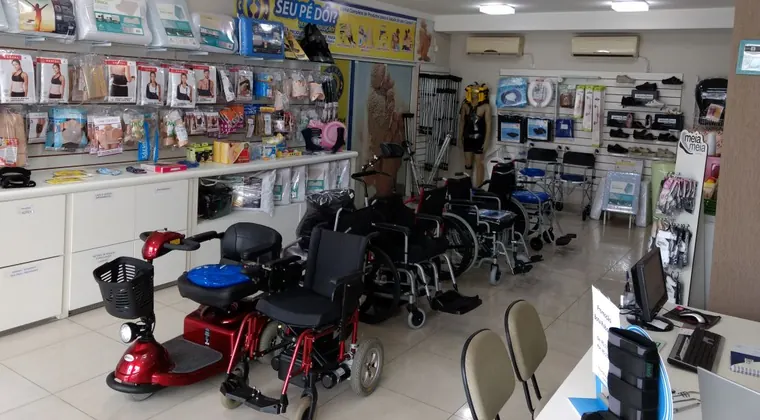
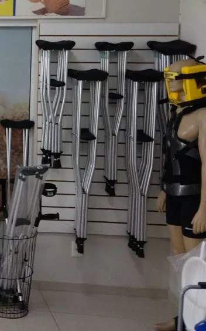
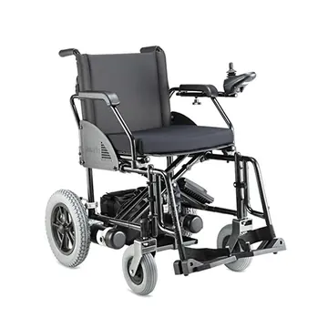
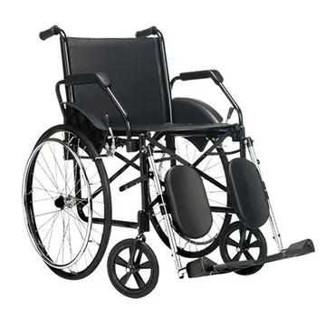
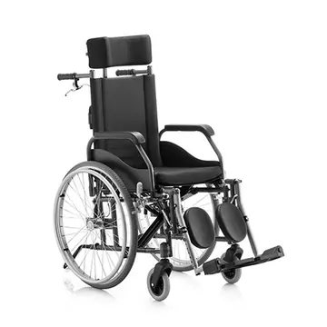
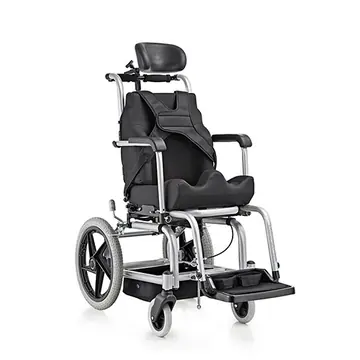
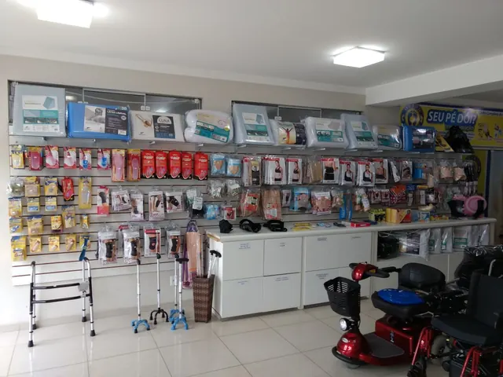
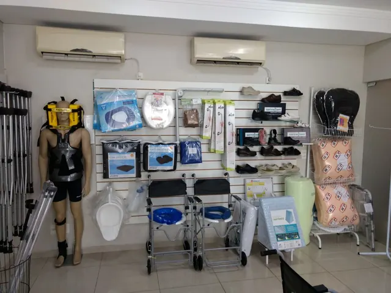
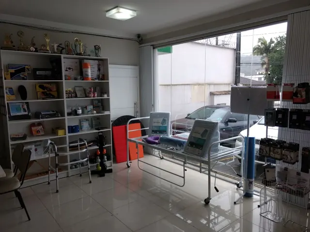

Cadeiras de rodas, andadores, muletas e bengalas em Joinville
Venda e locação de cadeiras de rodas e muletas. Loja de produtos ortopédicos, hospitalares e de bem-estar no Bucarein, há mais de 15 anos.

O que você precisa?
Toque no equipamento para ver os modelos que a loja trabalha.
Precisa só por um tempo? Cadeiras de rodas e muletas também para alugar.
Ligue ou mande uma mensagem e faça sua reserva.

Cadeiras de rodas
Ver os 11 modelos
Cadeira Tiger, até 90 kg

Cadeira Poty, até 120 kg

Cadeira Fit reclinável, até 100 kg

Cadeira Star Postural
Fotos dos modelos. Modelos e cores podem variar conforme o estoque: consulte a loja.
Além da mobilidade
Hospitalar
Camas e colchões hospitalares, cadeiras e poltronas de coleta, macas, escadas, mesas e suportes de soro.
Órteses
Joelheiras, coletes, imobilizadores, munhequeiras e colares cervicais. A loja tem um profissional para órteses e próteses.
Bem-estar e pés
Travesseiros e almofadas ortopédicas, palmilhas e protetores para os pés, bolas, faixas e acessórios para exercícios em casa.
Loja especializada em produtos ortopédicos, hospitalares e de bem-estar, com atendimento personalizado.



Visite ou fale com a loja
Pergunte se o modelo que você precisa está disponível antes de ir.
- EndereçoAv. Cel. Procópio Gomes, 216, Bucarein, Joinville (SC)
- Telefone(47) 3422-6212
- WhatsApp(47) 99787-6475
- E-mailcomercial@ortopedicajoinville.com.br